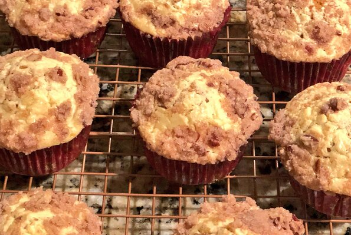

Pumpkin Cream Cheese Muffins

Description
You'll be glad you made this recipe for pumpkin muffins with a cream cheese filling and a streusel topping.
Ingredients
- 1 (8 ounce) package cream cheese
- 1 egg
- 1 teaspoon vanilla extract
- 3 tablespoons brown sugar
- 4 ½ tablespoons all-purpose flour
- 5 tablespoons white sugar
- ¾ teaspoon ground cinnamon
- 3 tablespoons butter
- 3 tablespoons chopped pecans
- 2 ½ cups all-purpose flour
- 2 cups white sugar
- 2 teaspoons baking powder
- 2 teaspoons ground cinnamon
- ½ teaspoon salt
- 2 eggs
- 1 ⅓ cups canned pumpkin
- ⅓ cup olive oil
- 2 teaspoons vanilla extract
Steps
-
Preheat oven to 375 degrees F (190 degrees C).
Grease and flour 18 muffin cups, or use paper liners.
-
To make the filling: In a medium bowl, beat cream cheese until soft.
Add egg, vanilla and brown sugar. Beat until smooth, then set aside.
-
For the streusel topping: In a medium bowl, mix flour, sugar, cinnamon and pecans.
Add butter and cut it in with a fork until crumbly. Set aside.
-
For the muffin batter: In a large bowl, sift together flour, sugar, baking powder, cinnamon and salt.
Make a well in the center of flour mixture and add eggs, pumpkin, olive oil and vanilla.
Beat together until smooth.
-
Place pumpkin mixture in muffin cups about 1/2 full.
Then add one tablespoon of the cream cheese mixture right in the middle of the batter.
Try to keep cream cheese from touching the paper cup.
Sprinkle on the streusel topping.
-
Bake at 375 degrees F (195 degrees C) for 20 to 25 minutes.